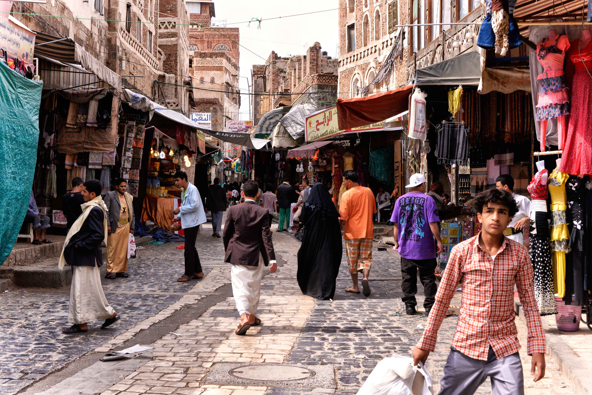

Houthis say death toll from airstrikes near Yemen's Sanaa has risen to 44
Houthi-run health officials report 21 children and ten women among the dead; the toll has not been independently verified.

What happened
Health authorities run by Yemen's Houthi movement said on Monday, November 9, 2026, that the death toll from airstrikes on the village of al-Shariya, in Bani Hushaysh east of the capital Sanaa, had risen to 44. Spokesperson Anees al-Asbahi said the dead included 21 children and ten women, while 40 other people were injured, including eight children and nine women. The strikes hit homes on Saturday, November 7. Rescue teams were still searching for missing people, according to the Houthi authorities. The movement blamed Saudi Arabia. The updated figures were reported by the Associated Press, AFP and Anadolu Agency, but journalists could not independently confirm the numbers or responsibility. On November 7, Reuters had reported an earlier toll of 33 dead and 39 injured, citing the same authorities. Fighting between the Iran-backed Houthis and Saudi-linked forces has intensified since July, ending the relative calm that followed a 2022 truce.
The Crow's analysis
The higher reported death toll highlights the human cost of escalating fighting in populated areas of Yemen, where civilians face increasing danger and barriers to medical care. The reported deaths of women and children make independent verification of the circumstances and targets especially important. All parties are bound by international humanitarian law to protect civilians. The violence is also part of a wider regional escalation, including Houthi attacks on Saudi infrastructure and military responses. Immediate priorities include searching for missing people, treating the injured and allowing independent observers to reach the site.
Counterpoint
The figures of 44 dead and 40 injured come from a Houthi-run health ministry, an authority associated with one of the parties to the conflict. AP, Reuters and other news outlets have not independently verified the count or established responsibility. The Houthis blame Saudi Arabia, but their accusation is not an independently established finding. The accompanying photograph is an archive image of a street in Sanaa taken on April 28, 2015, and does not depict the al-Shariya attack.
Sources
- Associated Press — Houthi rebels say at least 44 killed in airstrike near Yemeni capital (09/11/2026)
- AFP/UOL — Número de mortos em ataque saudita contra o Iêmen sobe para 44, afirmam houthis (09/11/2026)
- Anadolu Agency — Yemen'deki Husiler: Suudi Arabistan'ın Sana'ya düzenlediği saldırılarda ölü sayısı 44’e yükseldi (09/11/2026)
- Reuters — Houthi-run health ministry says airstrikes kill 33 near Yemen capital (07/11/2026)